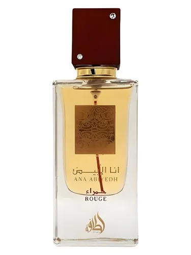

Ana Abiyedh Rouge
- Unisex
- Familia cítrica
- Lanzado en 2016
$899
Precio de referencia. Te confirmamos el precio final y la presentación por WhatsApp antes de enviar.
Por encargo: lo conseguimos para ti
Cómo huele
Cítrico
Ámbar
Especiado fresco
Aromático
Caramelo
Sus notas
Salida
pera nashikumquatbergamota
Corazón
caramelogeranio
Fondo
ámbar grisalmizclemusgo de roble
Ana Abiyedh Rouge de Lattafa es un perfume cítrico para mujer y hombre, lanzado en 2016. Abre con pera nashi y kumquat, en el corazón tiene caramelo y geranio y deja un fondo de ámbar gris y almizcle. Lo que más se siente: cítrico, ámbar y especiado fresco.